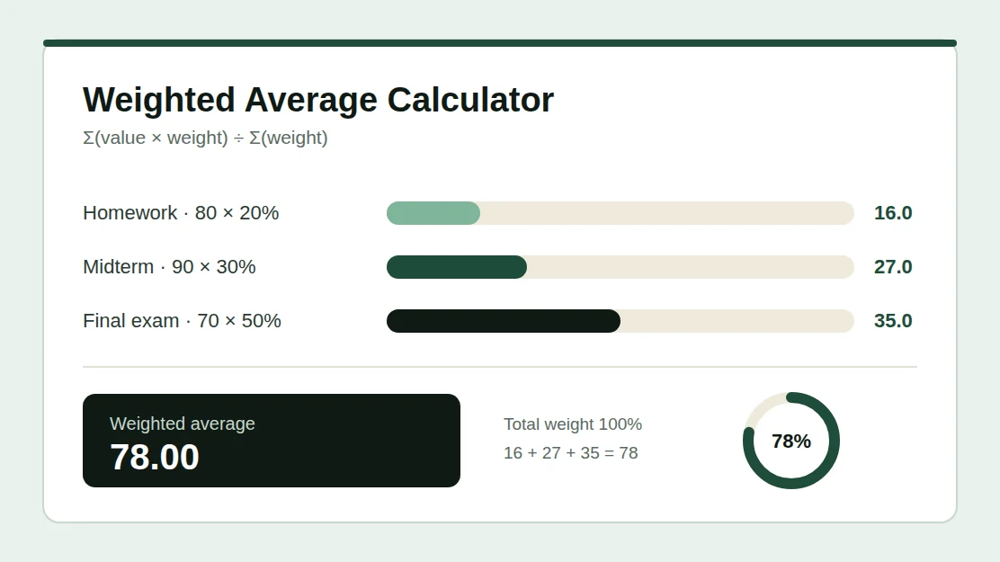

Weighted Average Calculator
Free weighted average calculator. Enter your values and their weights to get the weighted mean instantly, with every step shown. Use it for course grades, credit-weighted GPA, average prices or frequency tables, and find the score you need on your final exam.
Values & Weights
Use one consistent weight scale. Weights can total any positive number.
Paste from Excel, Sheets, or CSV
Paste two columns: value and weight. An optional label can be the first column. A header row is allowed. Use tabs, commas, semicolons, colons, or spaces. Use a dot for decimals; quote comma-grouped numbers in CSV. Labels with spaces need tabs or CSV quotes. Import replaces the rows only if every line is valid.
Target Score: What Do You Need?
The rows above are your completed items. Enter the average you want and the weight of the remaining item or group, on the same scale. The calculator solves for the minimum value needed to reach at least your target.
Enter a target average and the remaining weight.
The required value is rounded up to your selected decimal places so the displayed score meets the target. For course grades, use a minimum of 0 and a maximum of 100 unless your syllabus allows extra credit.
Calculation Steps
Waiting for valid dataYour products, normalized weights and contributions will appear here.
Weight share = weight ÷ total weight. Contribution = value × weight share. Displayed values are rounded, so rounded shares and contributions may not add up exactly to the displayed total.
What Is a Weighted Average Calculator?
A weighted average calculator finds the average of a set of values when some values count more than others. Each value is paired with a weight, such as a percentage, a credit hour or a quantity, and a larger weight pulls the result closer to its value. The answer is also called the weighted mean.
A simple average treats every number equally, which is rarely how grades work. A final exam worth 50% of your course should matter more than a quiz worth 5%, and a 4-credit course should matter more than a 1-credit lab. This calculator does the arithmetic and shows each step, so you can check it against your syllabus or transcript.
Your CGPA is itself a weighted average: every course grade point is weighted by its credit hours. For a result that follows your university's own grade table, use the CGPA Calculator that matches your grading scale, or read the CGPA formula guide.
How to Use This Weighted Average Calculator
Choose a Use Case and Weight Format
Pick Course grades, GPA by credits, Average purchase price, Frequency table or General. Then choose how your weights are written: relative numbers such as credits, percentages (20 = 20%), or decimal proportions (0.2 = 20%).
Enter Values and Weights
Type each value and its weight, with an optional label. You can also paste two columns from Excel, Google Sheets or a CSV file. The result updates as you type.
Read the Result and the Steps
The weighted average, total weight, weighted sum and simple average appear in the result card. The calculation steps table shows each product, weight share and contribution.
Find the Score You Need
Open the target section, enter the average you want and the weight of the remaining item, and the calculator shows the minimum value you need to reach it.
Weighted Average Formula

A weighted average, or weighted mean, gives each value influence in proportion to its weight. Larger weights have more influence on the answer. To calculate it by hand:
- Multiply each value by its weight.
- Add these products to get the weighted sum.
- Divide the weighted sum by the total weight.
| Formula | Example |
|---|---|
| Weighted Average = Σ(value × weight) ÷ Σ(weight) | (80 × 20 + 90 × 30 + 70 × 50) ÷ 100 = 78 |
Use non-negative weights, with at least one greater than zero. Values can be positive, negative or zero. The same proportions give the same result, so weights of 2, 3 and 5 are equal to 20, 30 and 50 and to 0.2, 0.3 and 0.5. Use just one scale in each calculation.
One Formula, Four Common Uses
Course grades with percentage weights
Homework 80 at 20%, midterm 90 at 30%, and final 70 at 50%.
(80 × 20 + 90 × 30 + 70 × 50) ÷ 100 = 78%
For incomplete coursework, the result is an average of the work entered, not a complete final grade.
Grade points weighted by credits
3.5 for 3 credits, 4.0 for 4 credits, and 3.0 for 2 credits.
(3.5 × 3 + 4 × 4 + 3 × 2) ÷ 9 = 3.61
Enter your institution's numeric grade points and GPA-eligible credits. Letter conversions and transcript rounding vary.
Average price per unit
100 units at $10, 50 at $12, and 200 at $9.
(10 × 100 + 12 × 50 + 9 × 200) ÷ 350 = $9.71
Enter price as the value and quantity as the weight, in one currency and unit. This example excludes fees and taxes.
Mean from a frequency table
A value of 2 occurs 3 times, 4 occurs 2 times, and 7 occurs once.
(2 × 3 + 4 × 2 + 7 × 1) ÷ 6 = 3.50
Enter each distinct value and its count. Grouped intervals need class midpoints and give an estimate.
Weighted Average vs Simple Average
A simple average gives each row equal importance. A weighted average uses the weights you supply. For a value of 60 with weight 1 and a value of 90 with weight 3, the simple average is 75, but the weighted average is 82.5 because the larger weight pulls the answer toward 90.
| Weighted Average | Simple Average |
|---|---|
| Each value has its own weight | Every value has equal importance |
| Used for grades, GPA, prices and frequencies | Used when all items count the same |
| Σ(value × weight) ÷ Σ(weight) | Σ(value) ÷ number of values |
| 60 (weight 1) and 90 (weight 3) give 82.5 | 60 and 90 give 75 |
When weights are frequencies, the weighted average equals the ordinary mean of all the observations they represent. The simple average shown in the result card is the mean of the rows you entered, not of the expanded observations.
What Score Do I Need on the Final?
Suppose your coursework is worth 40% of the course and you scored 72 on it. You want an overall 80, and the final exam is worth the remaining 60%. Solve for the final score:
| Formula | Example |
|---|---|
| Needed = (Target × Total weight − Current sum) ÷ Remaining weight | (80 × 100 − 72 × 40) ÷ 60 = 85.333… |
At two decimal places, aim for at least 85.34, because rounding down to 85.33 would fall just short of 80. The target score section above does this for your own numbers and also checks your minimum and maximum possible scores.
Why Use This Weighted Average Calculator?
Every Step Shown
See each product, weight share and contribution, so you can check the working and follow it in an exam.
Target Score Solver
Find the minimum score you need on the remaining work to reach the average you want.
Paste From Spreadsheets
Paste two columns from Excel, Google Sheets or a CSV file instead of typing every row.
Exact Arithmetic
Results use exact decimal fractions, so long decimals and big numbers are not distorted by rounding errors.
Private by Design
Everything is calculated in your browser. Your numbers are never uploaded or stored.
Copy or Download
Copy the result with its steps, or download the whole calculation as a CSV file.
Weighted Average in Excel and Google Sheets
To verify a result in a spreadsheet, put your values in one column and your weights in the next, then use SUMPRODUCT divided by SUM. The plain AVERAGE function would treat every value equally.
| Cells | Formula |
|---|---|
| Values in A2:A10, weights in B2:B10 | =SUMPRODUCT(A2:A10,B2:B10)/SUM(B2:B10) |
The total weight must be greater than zero. Both Excel and Google Sheets use the same formula.
Who Can Use This Calculator?
Students use it to combine assignment, midterm and final scores, to work out credit-weighted GPA, and to plan the score they need on an upcoming exam. Teachers and tutors use it to check gradebook results. Shoppers and small business owners use it to find an average unit price across purchases of different sizes, and anyone working with a frequency table can use it to find the mean without repeating every observation.
Weighted Average Calculator FAQ
No. The weighted average divides by the actual total weight, so weights can be credits, quantities or any positive numbers. Percentage weights usually add to 100 for a complete course. If they do not, this calculator shows the average of the entries you typed and explains how much weight is unassigned.
Yes. Use each percentage as the value and its denominator as the weight. For 8 out of 10 (80%) and 45 out of 50 (90%), the combined percentage is (80 × 10 + 90 × 50) ÷ 60 = 88.33%. If a syllabus assigns category weights, use those category weights instead.
Choose decimal proportions for weights such as 0.2, 0.3 and 0.5, or percentages for 20, 30 and 50. In percentage format, 20 and 20% both mean 20%. Do not mix these scales in one calculation. A % sign on a value, such as 80%, means a score of 80, not 0.8.
Zero weights are allowed and contribute nothing to the weighted average. If every weight is zero, no average is defined. Negative weights are rejected because they make no sense for grades, quantities or frequencies. Negative values are allowed.
It calculates a credit-weighted mean of numeric grade points, which is exactly how GPA and CGPA are built. It does not convert letter grades or add honors points automatically. For a result that follows your university's own grade table, use the CGPA Calculator that matches your grading scale.
If values are in A2:A10 and weights are in B2:B10, use =SUMPRODUCT(A2:A10,B2:B10)/SUM(B2:B10). The total weight must be greater than zero. The AVERAGE function alone gives every value equal importance.
A current grade averages only the completed work. Unfinished work is not counted as zero unless you enter it with a value of zero and its weight. Drop rules, bonus items and category calculations can also change your school's official result. For categories, enter the category average and its syllabus weight.
Enter your completed scores and weights in the calculator, then open the target section below it. Type the average you want and the weight of the remaining exam. The calculator solves for the minimum score and rounds it up so the displayed number always meets your target.
No. Your inputs are processed in your browser and are not sent to a server or stored between page reloads. You can copy the result or download it as a CSV file before closing the page.
It uses exact decimal and fraction arithmetic and rounds only the displayed result. Each number can have up to 30 digits, you can enter up to 500 rows, and results can be shown with 0 to 10 decimal places. Very small nonzero values are shown in scientific notation instead of being rounded to zero.
Calculation References
The calculation follows the standard weighted-mean formula. These references explain spreadsheet verification and credit-based GPA calculation.
Related Academic Calculators
Related CGPA Guides
How to Calculate CGPA
Learn how your semester grades feed into your cumulative CGPA: a step-by-step manual calculation guide.
Read guide → →CGPA Formula
See the credit-weighted formula behind CGPA, with worked examples you can follow by hand.
Read guide → →How to Improve Your CGPA
Knowing your current average is step one. Learn the strategies that move your CGPA upward each semester.
Read guide →